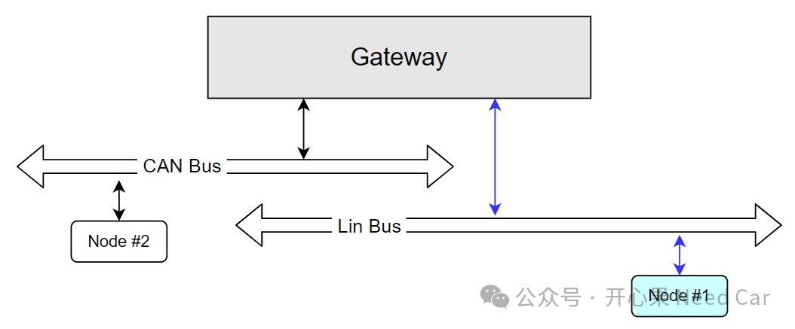
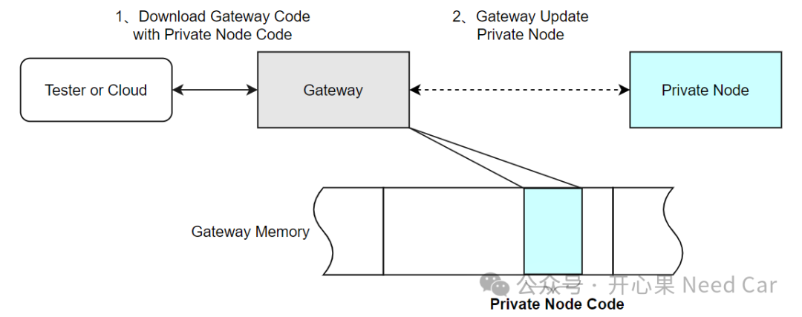
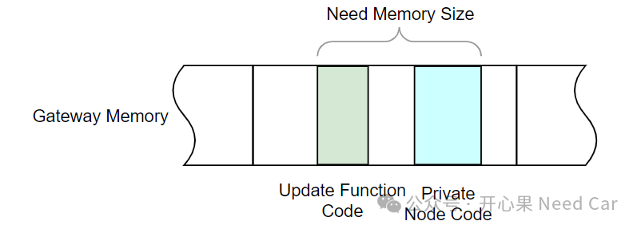
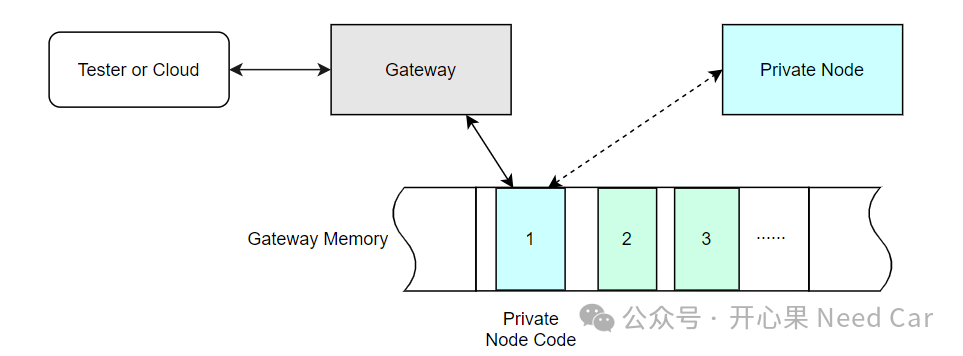
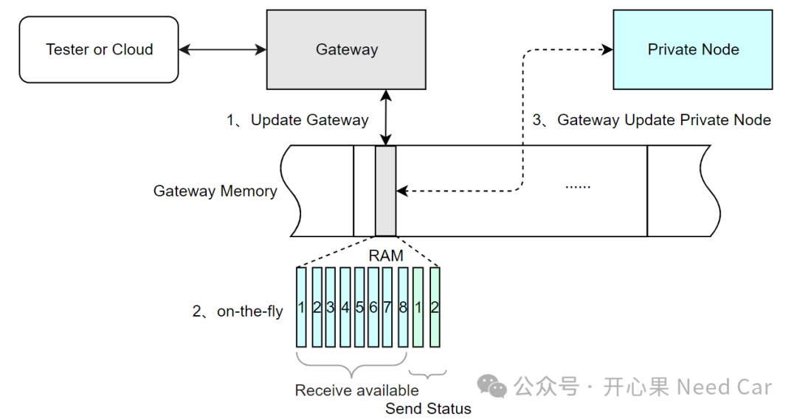
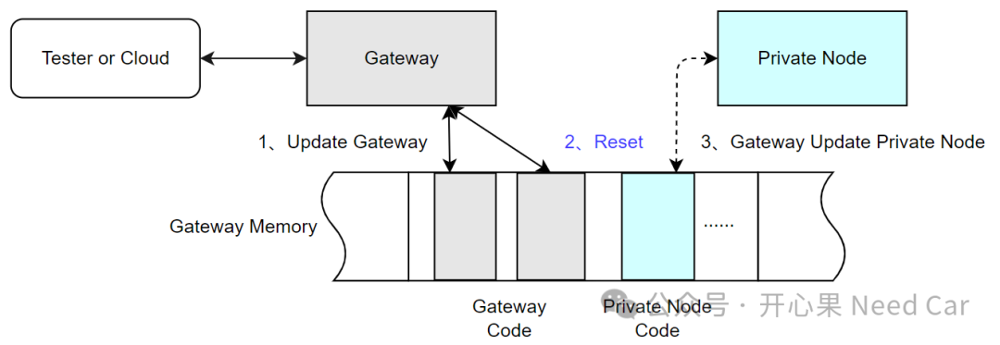
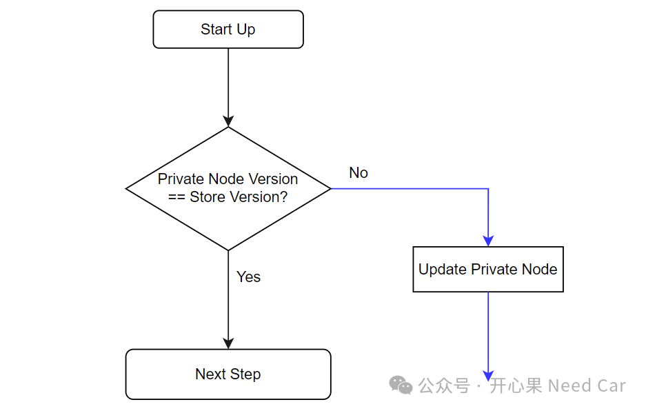

返回本专题目录Bootloader开发：一种降成本的从节点升级方案
开心果 Need Car · 2024-06-13T06:44:00+08:00 · 微信原文
从事汽车行业的小伙伴应该听过Bootloader、OTA（Over the Air）、A/B分区（回滚策略）、差分升级...这些名词，本质上都在围绕一件事：升级软件程序。随着车辆智能化的提升，车辆变得越来越智能，给驾/乘人员带来了更丰富和舒服的体验。更好的用户体验和性价比就更有可能抢占更大的市场份额，所以，各大车企就"卷"起来了，变着花地升级自家车辆功能，当然，也利用着每次升级不断地修补已知或者新发现的bug。既然，要升级软件程序，就不得不提Bootloader。Bootloader生来就是为升级程序服务的。虽然Bootloader为升级程序而生，但是，并不意味着：软件升级就是一件简单的事情。如果要升级终端用户（车主）的车辆，首先，我们需要获取用户的授权，其次，需要对升级软件进行结算...关于软件结算的概念，可以参考前文《工程思考：为什么OEM抵触Bootloader更新？》。所以，整个软件升级动作，需要多个部门的协调配合（开发、测试、售后、OTA团队、质量、系统、4S店等）。而这所有的联动环节，都会触及一个核心问题：成本。
所以，即使利用最便利的OTA方案，升级程序也会裹挟着一定的成本投入。那么，有没有能节省软件升级成本的方案呢？在细化一下这个问题：不做硬件改动的前提下，升级某个网关节点的私有从节点（原有的程序中没有升级功能），有没有更节省成本的方案呢？在车型的迭代升级中，往往有一些小件（简单的控制器）不需要大的调整，在新的车型中直接复用即可。但是，有时为了适配新的功能，虽然硬件可以不做调整，但是软件需要做必要的升级。既然软件需要调整，就会涉及到一个问题：软件更新。比如，下图的Node #1节点，Node #1是网关节点（Gateway）的私有Lin节点。对于Node #1节点的升级，原有的整车升级流程中（包括OTA流程），没有Node #1节点的升级操作。如果主机厂想降低成本，但是又不愿意再花钱让供应商更改硬件（eg：增加升级用的CAN总线）。那么，如果要升级Node #1节点的软件程序，怎么办呢？

面对如上的工程应用场景，本文聊一个方案：将网关私有节点程序看作网关节点程序的一部分，存储在网关节点中，之后，由网关节点升级目标私有节点，示意如下：

如上的方案，从理论上可行，但是，在实现细节上，有诸多细节点值得讨论：
理论上，只要Gateway节点内存空间足够，私有节点的程序可以存储在Gateway的任何内存区，eg：RAM、DFlash、PFlash均可。但是，我们还是要从工程实际出发，不能想当然。如果能将私有节点程序独立存储在RAM区，固然好，但是，实际的项目中，RAM资源比较少，很难独立出一块足够大的地址空间。对于DFlash，也是一样，一块芯片的DFlash往往会设计成NVM，用于存储关键数据，所以，也很难预留太大的空间用于缓存私有节点的程序。所以，PFlash似乎就成了一个不错的选择，一般的芯片资源中，PFlash空间往往最大，因此，PFlash也更适合存储私有节点的程序。除了考虑私有节点的程序空间以外，Gateway节点还有可能需要拓展功能，eg：新增升级私有节点的程序。所以，实际需要的内存空间可能更大，示意如下：
对于需要升级的私有节点，一般来说，选择通信速率不会太高，eg：500Kbps的经典CAN，19200bps的Lin。尤其对于Lin节点，其通信速率低，完成其软件程序的升级，需要的时间相对较长，几分钟到数十分钟都有可能。所以，如果是升级Lin子节点，且原有刷写流程本就不支持该Lin节点的升级时，就只能依赖Gateway升级私有Lin节点。那么，升级该Lin节点的时机，是一个需要好好思考的问题。什么时机升级网关节点的私有Lin节点合适呢？
由于私有子节点的通信速率低，升级耗时长，为了不影响整个软件升级时间，此方式需要将私有子节点的程序作为第一个或者优先下载的程序，示意如下：

如果选择此方式，就类似一种"透传"（on-the-fly），因此，存储私有子节点的内存空间也就要求不大，可以根据实际情况选择对应的存储区域，甚至可以选择RAM区缓存。当Gateway收到上位机或者云端的子节点程序后，Gateway随即开始充当私有节点的上位机，开始下载私有子节点程序，从而降低所需空间，同时，也降低子节点升级速率慢带来的影响。由于Gateway接收数据的通信速率相对较大（eg：10Mbps），所以，在接收子节点数据时，需要更多的缓存空间（多个单帧+多个多帧缓存区）。而Gateway发送给子节点时，由于通信速率低（eg：19200bps），缓存区释放的相对较慢，所以，升级过程中，Gateway可以适当的响应上位机流控等待状态。FIFO+on-the-fly升级方式，示意如下：

注意：如果将子节点程序作为优先接收的程序块，升级子节点完成时间依然超过了整个Gateway升级流程规定时间，此方案不可行。
此方案要求外部上位机或者云端将Gateway以及Private程序一起下载到网关的PFlash内存区，下载完成并复位以后，由Gateway的Application判断是否需要升级私有子节点程序，示意如下：

此方案的优点：不用考虑升级私有节点的时间问题。但是，这个方案需要考虑另外一个问题：Gateway何时升级私有子节点。首先，Gateway完成升级并重新启动以后，程序需要进入Application程序，不然，会影响与其他节点的通信；其次，受限于子节点的通信速率，Gateway升级子节点的时间较长，这需要确保车辆在没有私有子节点参与工作的情况下，车辆功能不受影响，或者不存在安全隐患；
再次，既然私有子节点的升级完全由Gateway判断，那么，就存在车辆在正常行驶过程中，升级私有子节点的可能（注意，不是静默升级），需确保该工况下的车辆安全。如果私有子节点的升级完全由Gateway决定，Gateway就需要判断何时升级私有子节点。本文提一种方式：程序启动阶段，Gateway进入Application以后，先判断预存储的私有子节点版本是否与读取到的私有子节点版本匹配，如果匹配，则正常启动；如果不匹配，说明有新的子节点程序需要更新，Gateway的Application程序运行以后，需要同时处理私有子节点的更新，示意如下：
点击下方关注，一起聊聊Autosar/嵌入式，如果需要，联系作者进群，给你更专业的解答